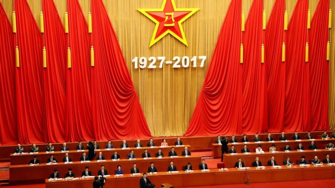
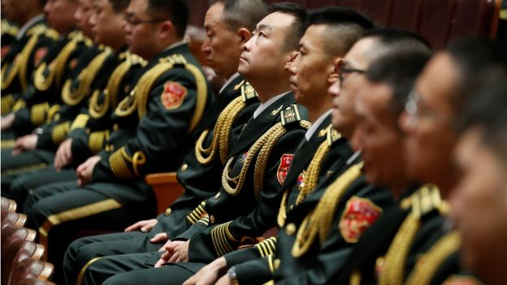
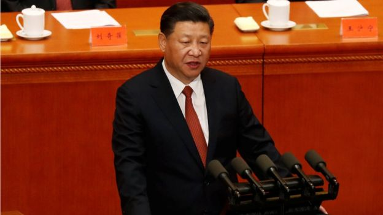
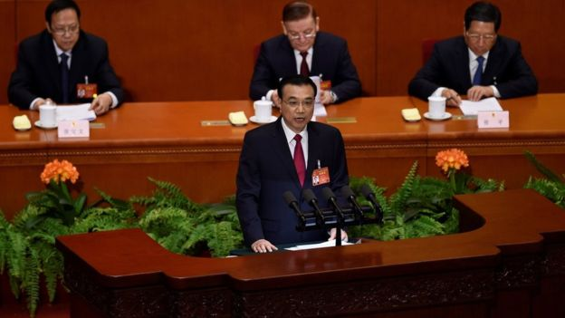
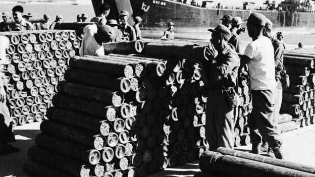
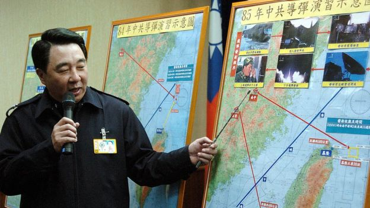
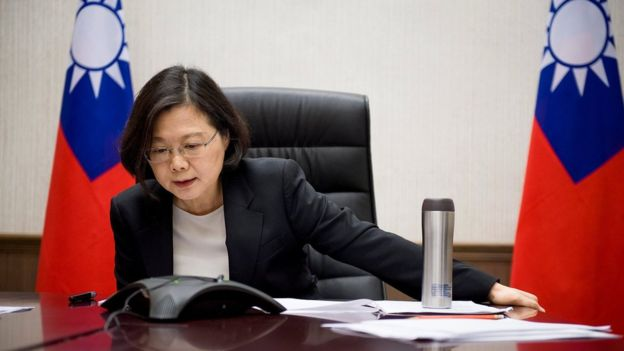

习近平建军节讲话透露“武统台湾”几率增大？
文章来源:http://www.bbc.com/zhongwen/simp/chinese-news-40801647
发稿日期:2017/8/2

习近平在庆祝中国解放军建军90周年大会上发表演讲。 (REUTERS)
中国国家主席习近平在庆祝中国解放军建军90周年大会上发表演讲，再次提到不允许中国领土分裂，并使用了“六个任何”的强硬措辞，
这是否透露出武力解决台湾问题的可能性上升？
身兼中共中央总书记、中央军委主席的中国国家主席习近平，8月1日建军节在庆祝中国解放军建军90周年大会上发表演讲，
他提到：“我们绝不允许任何人、任何组织、任何政党、在任何时候、以任何形式、把任何一块中国领土从中国分裂出去，
谁都不要指望我们会吞下损害我国主权、安全、发展利益的苦果。”
台湾执政党民进党回应，“任何恫吓的语言，只会远离台湾民心”，民进党发言人王闵生表示，中华民国是个主权独立国家，
台湾的民主应由两千三百万人以民主方式共同决定，中国大陆必须正视中国民国存在事实，两岸的和平发展应建立在彼此良性沟通对话之上。
紧张情势上升？

建军90周年大会有武警部队官兵代表、老战士、烈士家属、中央军委委员军队英雄模范、各界群众代表，解放军、武警部队官兵代表等约3000人出席。 (REUTERS)
淡江大学国际事务与战略研究所助理教授黄介正接受BBC中文访问时表示，在建军节上，
而且与会成员有解放军、武警部队官兵代表、老战士、烈士家属、中央军委委员的场合中发表的演说，“调性不可能会软”，
而且发言本身的军事意味会比较浓厚。因此一些人可能会将之解读为使用武力解决纷争，但黄介正不认为习近平的“六个任何”是新一轮军事行动的预告或威胁。
厦门大学台湾研究院院长刘国深也认为，习近平在建军节的讲话没有将情势升级。刘国深对BBC中文说，习近平的“六个任何”中没有直接点明针对台湾，
所以他认为这还是一个“原则性的讲话”。

刘国深表示，习近平对国家领土主权的态度一直很坚定，不论台湾是马英九执政还是蔡英文上台都一样。 (REUTERS)
习近平在演讲中提到“中国人民珍爱和平，我们绝不搞侵略扩张，但我们有战胜一切侵略的信心”。
刘国深分析，中国在军事上的准备越来越充份，越来越有能力维护国家领土主权完整，“两岸政权之争在没有结束的情况下，
中国是不会放弃武力统一。这不是好斗，每个国家都是这样。”这几十年来，中国政府越来越强调两岸和平交流，
但就算在马英九执政、两岸关系较和缓的时候，中国也没有将武力解决台湾问题的选项放弃。
刘国深表示，蔡英文不承认“九二共识”，“在两岸同属一个国家的立场上闪烁其词，对两岸气氛造成负面影响，
因此大陆民众主张用武力解决台湾问题的声音越来越大。”但习近平对国家领土主权的态度一直很坚定，不论台湾是马英九执政还是蔡英文上台都一样。
从“任何人”到“任何政党”？

李克强今年3月“两会”期间做政府工作报告。 (AFP)
中国国务院总理李克强今年3月北京“两会”期间做政府工作报告时表示，坚持“一个中国原则”，维护“九二共识”的共同政治基础，
“坚决反对和遏制‘台独’分裂活动，绝不允许任何人以任何形式、任何名义把台湾从祖国分裂出去。”
从“任何人”到习近平提到“任何政党”，似乎将矛头对准民进党。黄介正认为，从今年年初解放军演习到李克强演讲，到8月1日习近平的讲话，透露出的讯息强度其实相去不远。
黄介正认为，中国政府和平统一的基调并没有改变。中国在完成“中国梦”的大局之下，要确保中国与周边国家不会发生冲突，做好外交工作。
中国对台湾武力态度转变？

1954年处于备战状态的金门。 (GETTY IMAGES)
1950年、1960年代，中国与台湾军事情势紧张。1958年8月23日至10月5日之间在金门发生“八二三炮战”，解放军和中华民国国军隔海炮击，
最后中华民国守住金门，此后解放军对金门逢单日炮击，双日不炮击，直到1979年中华人民共和国与美国建交。
根据中国外交部，1979年，邓小平提出了“一国两制”的构想，指出“只要台湾回归祖国，我们尊重那里的现实和现行制度。”
1995年1月，江泽民(呱)进一步阐述了“和平统一、一国两制”思想的深刻内涵，提出了现阶段发展两岸关系、推进祖国和平统一进程的八项主张。

资料图片：2006年台湾国防部发言人展示1996年中国导弹演习示意图 (GETTY IMAGES)
但1995年至1996年，因为时任总统的李登辉一系列被中国政府认为是“鼓吹台独”的动作，中国政府对台湾展示武力，以台湾为目标进行两次导弹发射及军事演习。
胡锦涛接任中国国家主席后，延续江泽民(呱)路线，提出“争取谈、准备打、不怕拖”的主张。
2008年马英九担任台湾总统之后，承认“九二共识”，两岸交流制度化协商交流管道建立，民间互动也更加热络。但根据台湾国安局资料，
解放军在2009年进行了30场军事演习，其中70%是针对台湾，解放军部署针对台湾的导弹超过1960枚，比2008年增加50%，显示中国政府仍有所准备。

台湾的蔡英文总统与特朗普当选后直接通电话，惹来一场外交危机，特朗普其后称承认"一中"政策。 (REUTERS)
黄介正表示，目前民进党蔡英文执政，两岸制度化协商交流管道中断。在这种情况下，中国大陆加强语气，会让听到的人此时此刻感觉到气氛比较强烈，
但中国对台湾的态度基本上并没有改变。